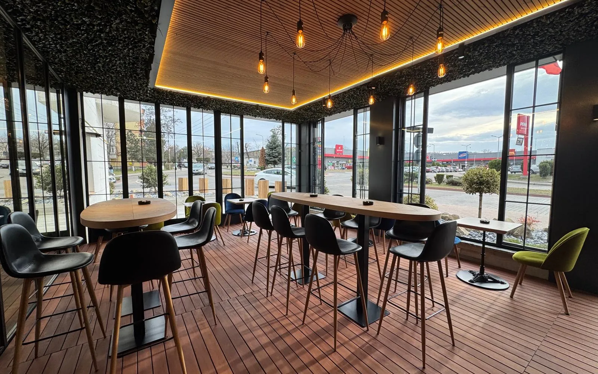
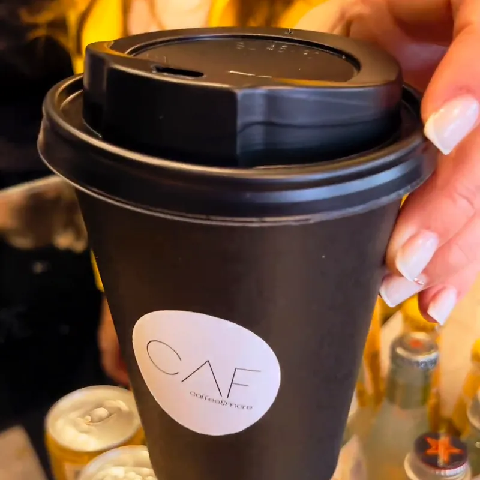

Încearcă-ți norocul.
O învârtire pe zi. Premiul e valabil doar azi, până la miezul nopții.
Sau apasă direct pe roată.

Înainte să fie cafenea, CAF a fost un atelier. La ArtLegno Porte&Scale se fac uși, scări și parchet, așa că, atunci când am deschis prima cafenea în Botoșani, am lucrat-o cu mâinile noastre.
La Dorohoi am ajuns pe 7 martie 2025. Barul, mesele și pereții au ieșit tot din atelier. Dacă te uiți de aproape, se vede în fibră.


O învârtire pe zi. Premiul e valabil doar azi, până la miezul nopții.
Sau apasă direct pe roată.
Barul, mesele și placarea pereților le-am făcut în același atelier. Am lăsat lemnul la vedere, pentru că ne place cum arată și cum se simte sub mână.


Espresso cu lapte spumat fin. Merge oricând, dar dimineața parcă e mai bun.

Scurt și intens, pentru o pauză rapidă.

Espresso dublu și puțin lapte catifelat.

Rumen pe dinafară, moale pe dinăuntru.
Se schimbă des. Întreabă la bar ce avem azi.
Trei lucruri pe care le comandă oamenii din nou și din nou.
Espresso cu lapte spumat fin. Merge oricând, dar dimineața parcă e mai bun.
14 leiMentă, lime și multă gheață.
20 leiRumen pe dinafară, moale pe dinăuntru.
12 leiCoffee is a magical drink that awakens the senses and provides moments of relaxation or energy. Its varied aromas, from floral notes to chocolate accents, perfectly match any mood. Regardless of the preparation method, coffee remains a source of inspiration and an irreplaceable ritual in everyday life
A very beautiful cafe, with a warm and welcoming atmosphere. The coffee is delicious, and the staff is very kind and attentive to the customers. Everything is well organized. I highly recommend this place and I will always come back with pleasure!!♥️
A gorgeous cafe, with a modern and elegant design, where every detail is chosen with taste. The atmosphere is relaxing, the coffee is excellent, and the staff is very friendly. A place you will be happy to return to. I recommend it with all my heart!
An elegant and welcoming cafe. It is always very clean, and the products are fresh and of the highest quality. Always friendly staff. I recommend it with confidence to everyone who appreciates quality and excellent service!
The most elegant cafe in the area. And the coffee is excellent!
Great coffee and nice staff!
Great coffee
super ok